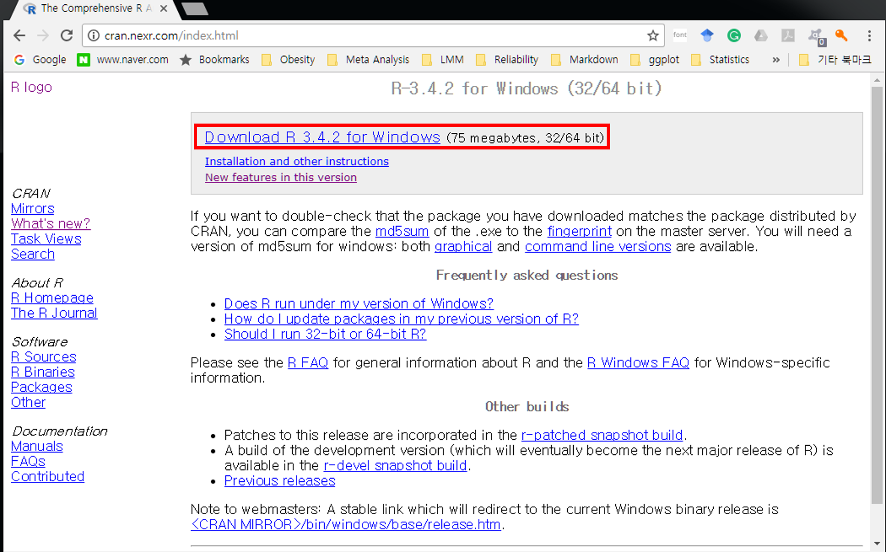
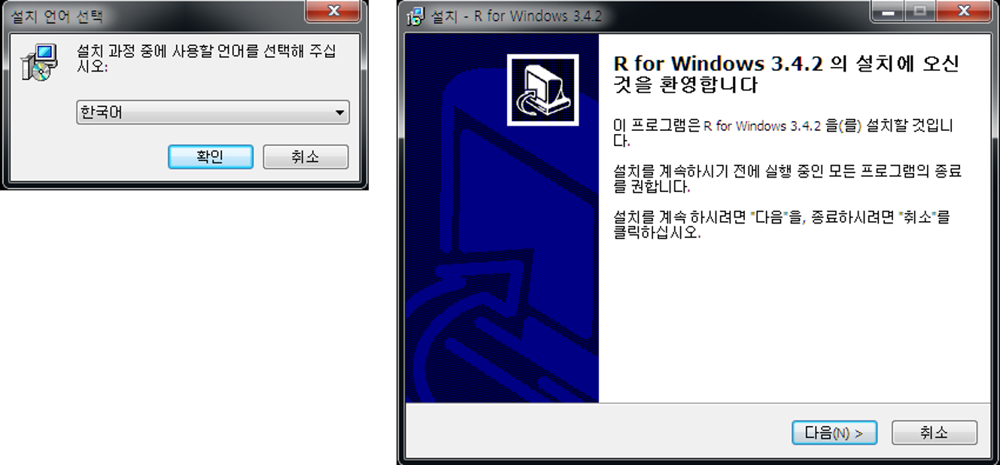
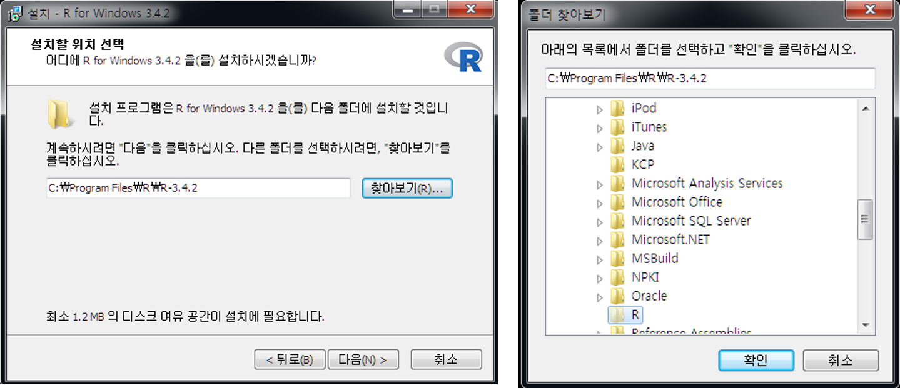
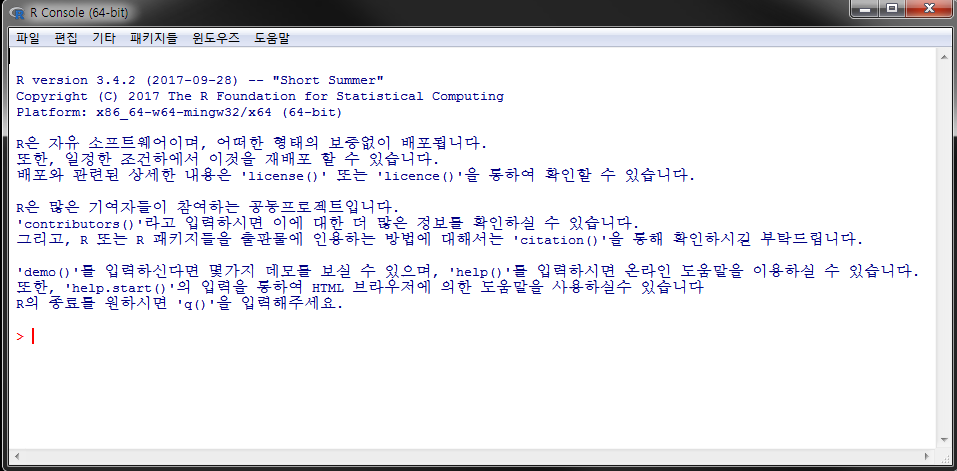

1.1 R 설치하기
R 다운로드 사이트: https://www.r-project.org 또는 https://cran.r-project.org
웹 브라우저(i.e. Explore, Chrome, Firefox 등)의 주소 입력창에 https://www.r-project.org
좌측 R Logo 하단 Download 아래 CRAN 클릭

- 클릭 후 연결한 페이지를 스크롤 후 Korea 아래 링크1 클릭

- 클릭 후 세 가지 운영체제(Linux, Mac OS X, Windowns)에 따른 R 버전 선택 가능2

- Downloads R for Windows 링크 클릭하면 다음과 같은 화면으로 이동

다음 하위폴더에 대한 간략 설멍
base: R 실행 프로그램contrib: R package의 바이너리 파일Rtools: R package 개발 및 배포를 위한 프로그램
- 위 화면에서 base 링크 클릭 후 아래 화면에서 Downloads R 3.x.x for Windows 를 클릭 후 설치 파일을 임의의 디렉토리에 저장 및 실행

- 다운로드한 파일을 실행하면 아래와 같은 대화창이 나타남
- 한국어 선택 \(\rightarrow\) 환영 화면에서 [다음(N)>] 클릭

- GNU 라이센스에 대한 설명 및 동의 여부([다음(N)>]) 클릭

- 설치 디렉토리 설정 및 구성요소 설지 여부
- 원하는 디렉토리 설정(예:
C:\R\R-3.x.x) - 기본 프로그램(“Core Files”), 32 또는 64 bit 용 설치 파일, R console 한글 번역 모두 체크 뒤 [다음(N)>] 클릭
- 원하는 디렉토리 설정(예:


- R 스타트업 옵션 지정
- 기본값(“No” check-button)으로도 설치 진행 가능
- 본 문서에서는 스타트업 옵션 변경으로 진행

- 화면표시방식(디스플레이 모드) 설정 변경
- MDI: 한 윈도우 내에서 script 편집창, 출력, 도움말 창 사용
- SDI: 다중 창에서 각각 script 편집창, 출력, 도움말 등을 독립적으로 열기

- 도움말 형식에서 HTML 도움말 기반 선택

- 시작메뉴 폴더 선택
- “바로가기”를 생성할 시작 메뉴 폴더 지정 후 [다음(N)>] 클릭 후 설치 진행
- 하단 “시작메뉴 폴더 만들지 않음” 체크박스 표시 시 시작메뉴에 “바로가기” 아이콘이 생성되지 않음(실행에 전혀 지장 없음)

- 추가 옵션 지정: 바탕화면 아이콘 생성 등 추가적 작업 옵션 체크 후 [다음(N)>] 클릭 \(\rightarrow\) 설치 진행
- 설치된 R 버전 정보 레지스트리 저장 여부
.Rdata확장자를 R 실행파일과 자동 연계

- 설치 완료 후 바탕화면의 R 아이콘을 더블클릭하면 Rgui가 실행

Figure 1.1: Windows에서 R 실행화면(콘솔 창, SDI 모드)